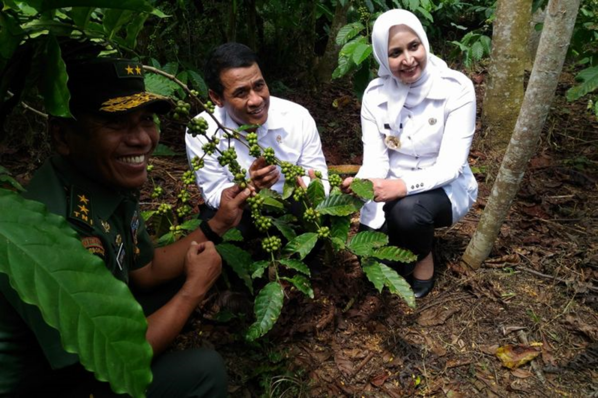

BERITA & EVENT>
BERITA >
BUPATI JEMBER AJAK KURANGI KEMISKINAN LEWAT PERTANIAN
Kementerian Pertanian menggandeng Pemerintah Kabupaten Jember untuk
mengurangi angka kemiskinan. Pemerintah melalui Kementerian Pertanian
membuat langkah baru dengan adanya Program Bedah Kemiskinan Rakyat
Sejahtera (Bekerja). Program ini merupakan salah satu upaya pemerintahan
Jokowi untuk mengurangi kemiskinan berbasis pertanian. Program itu
menyasar 1.000 desa dari 100 kabupaten terpilih. Menteri Pertanian, Andi
Amran Sulaiman, mengatakan program Bekerja bertujuan meningkatkan
kesejahteraan masyarakat miskin, utamanya petani di pedesaan.
"Melalui program Bekerja ini diharapkan bisa menekan angka kemiskinan
nasional," ujar Amran saat berdialog dengan keluarga miskin di Desa
Sukodigri, Kecamatan Ledok Ombo, Kabupaten Jember, Rabu (23/5/2018).
Program ini berfokus pada peningkatan pendapatan dan daya beli mayoritas
rumah tangga miskin (RTM) yang bekerja pada sektor pertanian mau pun
informal.
Program Bekerja merupakan bersinergi dengan Kemensos, BUMN,
Kemendes, BKKBN, dan pemerintah daerah. Amran mengatakan, bantuan
dari pemerintah ini bersifat jangka pendek hingga panjang. Artinya, melalui
bantuan yang diberikan hendaknya bisa dimanfaatkan seoptimal mungkin
agar pendapatan ekonomi keluarga meningkatan secara signifikan asal
dikelola dengan baik. "Dengan kita kerja, kerja, kerja, pendapatan pasti naik.
Sesuai arahan Bapak Presiden Jokowi, bantuan jangan disalahgunakan. Kita
yakin ke depan rakyat miskin pasti bisa dintuaskan," ucapnya.